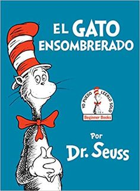

Se trata sobre la ayuda de la familia y los amigos. Ella le lleva comida a su abuela y un cazador los ayuda a ellos. El cazador salva a Caperucita Roja y a su abuelita de las garras del lobo feroz.Un gato que, a base de astucia y engaños, consigue la fortuna y la mano de una princesa para su amo, totalmente pobre.Estos cerditos siempre eran perseguidos por un lobo que se los quería comer. Para escapar de este lobo, los cerditos decidieron hacerse una casa.Un cisne que nace en un corral de patos. Ridiculizado por ser diferente, hasta que al fin crece y se convierte en la más hermosa y admirada criatura.Dos hermanos hijos de un leñador, viven con su padre y su madrastra cerca de un bosque, como eran muy pobres, a la madrastra se le ocurrió la idea de llevar a los niños a la parte más profunda del bosque y dejarlos allí abandonados.
Conejo pinta y esconde los huevos de chocolate para que los niños y las niñas los encuentren. Este año, nuestro protagonista tiene un pequeño problema...Un muñeco de madera que va atravesando diferentes pruebas en las que tiene que decidir entre el bien y el mal, y que finalmente se convierte en un niño de carne y hueso. Una princesa bonita, encantadora, dulce y adolescente llamada Blancanieves conoce a un grupo de siete enanitos cuando huye de su malvada madrastra.Este cuento enseña a los niños que a pesar de las circunstancias y adversidades (el soldadito tiene una sola pierna, termina en una alcantarilla, se lo traga un pez, etc.), uno puede ser capaz de conseguir lo que se proponga si pone el suficiente esfuerzo y empeño.

Un niño y una niña se encuentran tremendamente aburridos dentro de su casa durante un día lluvioso hasta que el Gato Ensombrerado llega y crea un desastre.